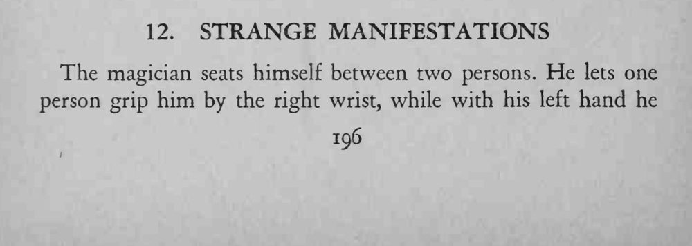
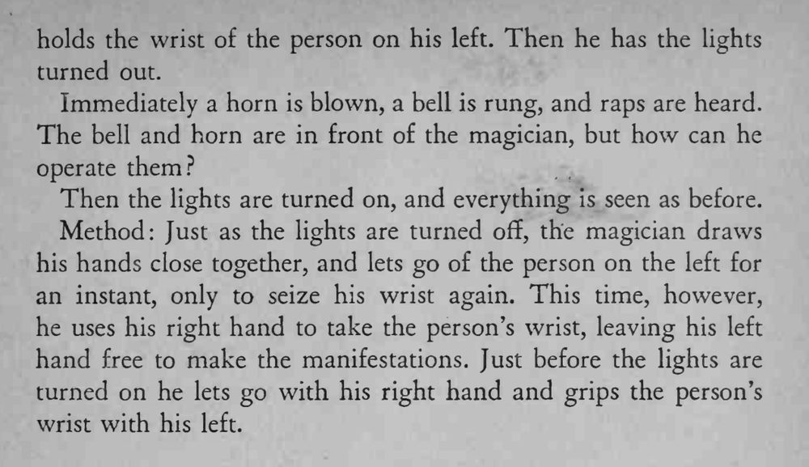

魔术师坐在两人中间，两手分别被两人握住；灯一灭，号角、铃铛、敲击声接连响起，灯亮时一切如旧。
换手必须在黑暗最初几秒完成，抓腕的位置要事先摸准。


The magician seats himself between two persons. He lets one person grip him by the right wrist, while with his left hand he holds the wrist of the person on his left. Then he has the lights turned out. Immediately a horn is blown, a bell is rung, and raps are heard. The bell and horn are in front of the magician, but how can he operate them? Then the lights are turned on, and everything is seen as before. Method: Just as the lights are turned off, the magician draws his hands close together, and lets go of the person on the left for an instant, only to seize his wrist again. This time, however, he uses his right hand to take the person's wrist, leaving his left hand free to make the manifestations. Just before the lights are turned on he lets go with his right hand and grips the person's wrist with his left.